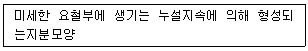
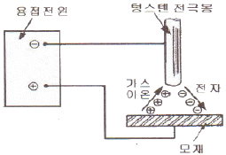
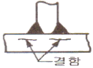

자기비파괴검사기사(구) (2012-03-04 기출문제)
1과목: 자기탐상시험원리
1. 공기 중 자계에 직각되는 면적 5cm2를 통과하는 자력선이 10라인(lines)일 때 자속밀도(Wb/m2)는 약 얼마인가?(단, 공기 중의 투자율 μ은 4π×10-7H/m 이다.)
- 2.5×10-2
- 7.9×10-2
- 5×10-3
- 2×10-4
(정답률: 알수없음)

2. 전류가 흐르고 있는 도체 또는 반도체에 전류와 직각으로 자계를 가하면 전류와 자계에 직각 방향으로 전위차가 발생하는 현상을 무엇이라 하는가?
- 자기공명(M.R)현상
- 홀 효과(Hall Effect)
- 케리어 효과(Carrier Effect)
- 임펄스 효과(Impulse Effect)
(정답률: 알수없음)
3. 코일법으로 자분탐상시험시 1회의 자화로 유효자계 범위를 충족시킬 수 없는 경우는?
- 길이 13cm 인 시험체
- 길이 25cm 인 시험체
- 길이 38cm 인 시험체
- 길이 50cm 인 시험체
(정답률: 알수없음)
4. 1Wb 자극에 1N(Newton)의 힘이 작용하는 경우 자계의 세기(H)는?
- 1 A/m
- 1 0e
- 1 Wb/m
- 1 dyne
(정답률: 알수없음)
5. 자화방법을 선정할 때의 주의사항 중 틀린 것은?
- 예측되는 결함 방향에 대하여 자계의 방향은 가능한 수직이 되게 한다.
- 탐상면에 손상을 주지 않는 자화방법을 선정한다.
- 대형시험체는 탐상면을 분할하여 국부적으로 자화시킬수 있는 자화방법을 선정한다.
- 자속의 방향이 탐상면에 가능한 한 수직이 되게 한다.
(정답률: 알수없음)
6. 표면하 결함을 가장 깊은 곳까지 찾을 수 있는 자화방법의 조합은?
- 교류, 건식법
- 교류, 습식법
- 직류, 습식법
- 직류, 건식법
(정답률: 알수없음)
7. 침투 탐상제를 이용한 누설시험에서 일반적인 침투탐상 시험과 달리 포함되지 않아도 되는 탐상 절차는?
- 전처리
- 침투처리
- 세척처리
- 현상처리
(정답률: 알수없음)
8. 비자성체의 표면 및 표면직하 결함을 표면 개구 여부에 관계없이 검출하고자 할 때 가장 적합한 비파괴검사 방법은?
- 자분탐상시험
- 침투탐상시험
- 음향방출시험
- 와전류탐상시험
(정답률: 알수없음)
9. 비파괴검사를 이상적으로 수행하기 위한 전제조건과 관계가 먼 것은?
- 검사에 소요되는 비용을 정확히 알아야 한다.
- 피검사 부위가 비파괴시험 적용이 가능해야 한다.
- 제조방법에 따른 발생가능 결함상황을 알아야 한다.
- 결함이 피검물의 성능에 미치는 영향을 알아야 한다.
(정답률: 알수없음)
10. 비파괴검사법으로 볼 수 없는 것은?
- 자분탐상시험
- 인장강도시험
- 중성자투과시험
- 초음파탐상시험
(정답률: 알수없음)
11. 자기이력곡선(hysteresis loop)은 무엇을 나타내는 가?
- 누설자속의 크기
- 강자성체의 경도
- 검사품의 자기적 특성
- 검사품의 재질과 용도
(정답률: 알수없음)
12. 방사선투과시험의 장점과 거리가 먼 것은?
- 내부결함의 검출이 가능하다.
- 물질의 큰 조성 변화 검출이 가능하다.
- 검사결과를 거의 영구적으로 기록할 수 있다.
- 방사선빔 방향에 평행한 판형결함의 검출이 용이하다.
(정답률: 알수없음)
13. 비파괴검사법 중 침투탐상시험만의 단점인 것은?
- 숙련이 필요하다.
- 전처리가 필요하다.
- 표면에 열려있는 결함이어야만 검출할 수 있다.
- 표면이 거칠거나 다공성인 경우는 검사가 어려워진다.
(정답률: 알수없음)
14. 외경 30mm, 두께 2.5mm 의 튜브를 직경 20mm인 코일이 감겨있는 내삽형 탐촉자로 와전류탐상시험할 때 충전율(fill factor)은 얼마인가?
- 0.44
- 0.64
- 0.67
- 0.80
(정답률: 알수없음)
15. 와전류탐상시험으로 탐상이 곤란한 것은?
- 파이프의 균열
- 재료의 전기전도도
- 박판에서 부식에 의한 두께 변화
- 자성체에서 자구(magnetic domain)의 배열 상태
(정답률: 알수없음)
16. 초음파탐상시험에 사용되는 탐촉자의 진동자 재질 중 티탄산바륨 탐촉자의 단점으로 옳은 것은?
- 물에 녹는다.
- 내마모성이 낮다.
- 송신효율이 나쁘다.
- 화학적으로 불안정하다.
(정답률: 알수없음)
17. 나열된 코일 중에서 사용 용도가 서로 다른 한 가지는?
- 관통형 코일
- 평면형 코일
- 내삽형 코일
- 직류여자 코일
(정답률: 알수없음)
18. 발포누설검사법(Bubble Test)의 장점이 아닌 것은?
- 큰 누설을 쉽게 찾을 수 있다.
- 누설부위의 직접 검출이 가능하다.
- 시험이 간단하며 비용이 저렴하다.
- 작은 결함에 대한 감도가 가장 우수하다.
(정답률: 알수없음)
19. 방사선투과시험과 비교한 초음파탐상시험의 장점과 거리가 먼 것은?
- 시험체 두께에 대한 영향이 적다.
- 미세한 균열성 결함의 검사에 유리하다.
- 결함의 형태와 종류를 쉽게 알 수 있다.
- 한쪽 면에서만 접근할 수 있어도 탐상이 가능하다.
(정답률: 알수없음)
20. 영구자석을 사용한 극간형(yoke type) 자분탐상시험법의 주된 장점으로 옳은 것은?
- 자력이 수시로 바뀐다.
- 탈자가 요구되지 않는다.
- 어떤 시험체에도 적용이 용이하다.
- 전력(electric power)이 요구되지 않는다.
(정답률: 알수없음)
2과목: 자기탐상검사
21. 코일법으로 자분탐상검사를 수행하는 경우 반자계에 대한 영향을 약하게 하기 위한 방법으로 옳은 것은?
- 시험체의 L(길이)/D(직경) 값을 작게 한다.
- 자화전류는 가능한 한 직류를 사용한다.
- 긴 시험체는 충분한 길이의 코일을 사용한다.
- 코일법에서는 선형자계를 이용하므로 반자계를 고려할 필요가 없다.
(정답률: 알수없음)
22. 전류관통법으로 배관(Pipe) 시험체를 자화한 경우 자계의 강도가 가장 강한 부분은?
- 배관의 외벽면
- 배관의 내벽면
- 배관의 전 두께에 동일
- 배관 벽의 두께 방향으로 중간 부분
(정답률: 알수없음)
23. 자분탐상검사의 특징에 대한 설명으로 옳은 것은?
- 강(steel) 시험체 경우 표면 및 내부 결함을 모두 검출 할 수 있다.
- 자화시 자속의 방향은 가능한 한 결함 면에 수직이 되도록 하여야 한다.
- 비형광자분은 형광자분에 비해 식별성이 매우 우수하므로 미세한 결함의 검출에 적합하다.
- 표면결함의 위치, 크기, 형상 그리고 시험체 두께 방향의 깊이에 관한 정확한 정보를 얻을 수 있다.
(정답률: 알수없음)
24. 길이 20cm, 외경 10cm 인 파이프(pipe)형태의 철강제품을 코일법으로 자분탐상검사할 때 코일의 권선수를 5회로 할 경우 필요한 자화전류는?
- 300A
- 450A
- 3000A
- 4500A
(정답률: 알수없음)
25. 유도전류법(Induced current method)에 대한 설명으로 틀린 것은?
- 자동장비에 사용이 가능하다.
- 시험체에 직접적인 전류의 접촉이 불필요하다.
- L/D 비율이 작아 코일법 적용이 불가능한 시험체에 가능하다.
- 크기가 작은 구형 시험체는 연속법으로 검사가 가능하다.
(정답률: 알수없음)
26. 형광자분을 이용한 자부탐상시험에서 시험체면의 조도를 20Lx(2ft-c)정도 이하로 유지할 수 없는 조건에서 검사를 수행해야 할 때 검사를 수행할 수 있는 조건과 가장 거리가 먼 것은?
- 자화 전류량이 높을 때
- 자외선의 양이 충분할 때
- 밝은 형광자분의 사용이 가능할 때
- 요구되는 검출강도가 그다지 높지 않을 때
(정답률: 알수없음)
27. 전류관통법의 특징을 설명한 것으로 틀린 것은?
- 시험체의 내부표면에 가장 높은 자계가 분포된다.
- 원형자계의 형성으로 축방향에 평행으로 존재하는 결함이 잘 검출된다.
- 전류관통용 구리봉과 시험체의 접촉부분은 스파크 발생의 위험이 있다.
- 베어링, 너트와 같은 구멍이 있는 시험체는 많은 양을 한 번에 검사할 수 있다.
(정답률: 알수없음)
28. 환봉형 시험체를 축통전법으로 검사할 대 동일 크기의 자화전류로 직경이 2배인 시험체를 검사한다면 시험면에서의 자계의 세기는 어떻게 되는가?
- 1/2이 된다.
- 2배로 된다.
- 4배로 된다.
- 8배로 된다.
(정답률: 알수없음)
29. 자분탐상검사에 사용되는 자화번류에 대한 설명으로 옳은 것은?
- 직류와 맥류는 잔류법, 연속법 모두에 사용한다.
- 자속관통법에서 연속법으로 검사하려면 직류를 사용한다.
- 충격전류는 일반적으로 통전시간이 짧기 때문에 연속법으로 사용한다.
- 맥류는 교류와 마찬가지로 표피효과 때문에 표면결함검출에 한정하여 사용한다.
(정답률: 알수없음)
30. 직경 30mm, 길이 60mm 인 원통형 시험체를 축 방향으로 자화할 때 반자계의 영향이 가장 큰 경우는?
- 내경 100mm, 길이 200mm 인 코일 내에 3개의 시험체를 코일의 축방향으로 나열해서 위치시킨 경우
- 내경 200mm, 길이 100mm 인 코일 내에 3개의 시험체를 코일의 축과 평행하게 묶어서 위치시킨 경우
- 내경 100mm, 길이 200mm 인 코일 내에 1개의 시험체를 위치시킨 경우
- 철심의 굵기가 50mm × 50mm 인 직류전자석의 자극사이에 1개의 시험체를 위치시킨 경우
(정답률: 알수없음)
31. 형광자분에 의한 지시모양의 관찰 방법에 대한 설명 중 틀린 것은?
- 관찰면의 밝기가 20Lx 이하인 곳에서 관찰하여야 한다.
- 관찰할 때에는 자외선을 시험 면에 직각으로 조사하여야 한다.
- 자외선조사등을 사용하여 파장이 320~400mm의 자외선이 시험면에 조사되어야 한다.
- 관찰 대상면이 복잡한 형상으로써 전체를 파악하기 어려울 때에는 탐상 대상에서 제외하여야 한다.
(정답률: 알수없음)
32. 시험체 표면에 있는 결함 검출에 가장 적합한 자화전류와 자분의 조합은?
- 직류 - 건식자분
- 교류 - 습식자분
- 직류 - 습식자분
- 교류 - 건식자분
(정답률: 알수없음)
33. 자분탐상검사 결과 나타날 수 있는 지시모양에 관한 설명 중 의사지시에 해당되지 않는 것은?
- 표면 요철에 의해 나타난 자분모양
- 시험체의 단면적이 급격히 변화하고 있는 곳에 나타난 자분모양
- 잉곳(Ingot)조괴 시에 발생한 재질적, 조직적 이상의 자분모양
- 자화된 시험체에 다른 시험체(강자성체)가 접촉하여 발생한 자분모양
(정답률: 알수없음)
34. 작은 드릴구멍이나 나사형태의 시험체를 자분탐상 검사하기 위한 가장 적합한 방법은?
- 형광자분, 건식법
- 형광자분, 습식법
- 비형광자분, 건식법
- 비형광자분, 습식법
(정답률: 알수없음)
35. 자분탐상검사에서 결함으로부터의 누설자속밀도에 관한 설명으로 옳은 것은?
- 누설자속의 분포는 표면결함이나 내부결함 모두 변함없이 일정하다.
- 강자성체의 표면근방이 가장 작고, 표면으로부터 멀어질수록 급격히 증가한다.
- 내부결함으로부터의 누설자속밀도는 표면결함과 같고 결함의 위치가 표면으로부터 멀어질수록 감소한다.
- 결함깊이가 같을 경우 결함 폭이 커짐과 더불어 일반적으로 누설자속밀도는 많아지나 비례관계는 아니다.
(정답률: 알수없음)
36. 외경 4인치인 시험체를 축통전법으로 자분탐상검사할 때 가장 적절한 자화전류(A)는?
- 400
- 1000
- 3000
- 10000
(정답률: 알수없음)
37. 형광자분을 이용한 자분탐상검사에 대한 설명으로 틀린 것은?
- 검사원은 검사할 때 감광성의 안경이나 콘텍트 렌즈를 착용해서는 안된다.
- 자외선등의 강도는 강도측정기로 하여 예열시킬 때부터 측정하여 예열이 완료되면 측정을 마친다.
- ASME Code 를 적용할 경우 자외선의 강도는 검사품의 표면에서 1000μW/cm2이상 되어야 한다.
- 자외선의 강도는 적어도 매 8시간마다, 그리고 검사 장소가 변경될 때마다 측정하여야 한다.
(정답률: 알수없음)
38. 주괴(ingot)로부터 주물을 생산할 때에 발생하는 고유결함(inherent discontinuities)이 아닌 것은?
- cold shut
- hot tears
- laps
- pipe
(정답률: 알수없음)
39. 습식형광자분의 농도 범위로 가장 적당한 것은?
- 0.3~1.5g/ℓ
- 7~15g/ℓ
- 16~30g/ℓ
- 35~50g/ℓ
(정답률: 알수없음)
40. 프로드를 통하여 용접부 표면에 전류를 흘린 경우 용접부 표면에 형성되는 자계에 가장 적게 영향을 미치는 것은?
- 프로드에 흐르는 전류에 의한 자계
- 자화케이블에 흐르는 전류에 의한 자계
- 반파정류기에 흐르는 전류에 의한 자계
- 시험제에 흐르는 전류 분포에 의한 자계
(정답률: 알수없음)
3과목: 자기탐상관련규격및컴퓨터활용
41. 보일러 및 압력용기에 대한 표준자분탐상검사(ASME Sec.V Art.25 SE-709)에서 건식자분을 사용하는 경우 시험체의 표면 온도는 최대 몇 ℃ 까지 사용 가능한가?
- 57℃
- 93℃
- 315℃
- 540℃
(정답률: 알수없음)
42. 철강 재료의 자분탐상 시험방법 및 자분모양의 분류(KS D 0213)에 따라 잔류법으로 습식자분을 시험체에 적용하는 시기로 옳은 것은?
- 자화 중에
- 자화 직전에
- 자화 종류 후에
- 자화 전, 중, 종료 후 구분없이 아무 때나
(정답률: 알수없음)
43. 다음 중 탈자에 관한 내용을 기술한 것으로 틀린것은?
- 연속하여 시험할 시 전회의 자화에 의해 영향을 받으면 탈자 한다.
- 시험품의 잔류자기가 이후의 기계가공에 영향을 미치면 탈자 한다.
- 탈자시 자계의 강도는 자화된 자장의 강도보다 클 필요는 없다.
- 시험품의 잔류자기가 계측 장치에 나쁜 영향을 미칠 염려가 있을 때 탈자 한다.
(정답률: 알수없음)
44. 철강 재료의 자분탐상 시험방법 및 자분모양의 분류(KS D 0213)의 의사지시모양 중 다음 설명이 의미하는 것은?

- 자극 지시
- 전극 지시
- 자기펜 자국
- 표면거칠기 지시
(정답률: 알수없음)
45. 보일러 및 압력용기에 대한 표준자분탐상검사(ASME Sec.V Art.25 SE-709)에 의한 탐상결과 나타난 자분모양이 불연속의 원인으로 누설자속에 의하여 형성된 관련지시의 합 ㆍ 부 판정을 할 경우의 판정 기준으로 옳은 것은?
- 검사자의 판정기준에 따른다.
- 불연속부로 판정된 것은 모두 합격 처리한다.
- 불연속부로 판정된 것은 모두 불합격 처리한다.
- 제조자 및 구매자사이에 합의된 판정기준에 따른다.
(정답률: 알수없음)
46. 보일러 및 압력용기에 대한 자분탐상검사(ASME Sec.V Art.7)에 대한 설명 중 틀린 것은?
- 검사는 연속법으로 수행한다.
- 각 시험부위에 대해 적어도 2번의 시험이 이루어져야 한다.
- 전처리 범위는 검사면과 최소 1인치 이내의 인접 부위로 한다.
- 전류계를 부착한 자화장치는 적어도 2년에 한번 교정하여야 한다.
(정답률: 알수없음)
47. 철강 재료의 자분탐상 시험방법 및 자분모양의 분류(KS D0213)에 의해 고장력 강과 일반구조용 강의판을 용접하여 연삭한 후 탐상시험을 하였더니 용접부의 길이 방향을 따라 길게 선형지시가 나타났다. 용접 결함이 없다면 이 지시는 어떤 의사모양 지시인가?
- 전류지시
- 표면거칠기지시
- 재질경계지시
- 자기펜 자국
(정답률: 알수없음)
48. 보일러 및 압력용기에 대한 자분탐상검사(ASME Sec.V Art.7)에 따라 인공결함 심(Artificial flaw shim)을 사용하여 자장의 적정성을 측정할 때 인공결함의 깊이는 심두께의 몇 %까지 명확히 나타나는 것으로 하는가?
- 15%
- 20%
- 25%
- 30%
(정답률: 알수없음)
49. 철강 재료의 자분탐상 시험방법 및 자분모양의 분류(KS D 0213)에 의해 용접부의 열처리 후, 압력용기의 내압시험 종료 후에 행하는 자분탐상시험의 자화방법은 원칙적으로 어떤 방법을 사용하는가?
- 통전법
- 관통법
- 극간법
- 프로드법
(정답률: 알수없음)
50. 보일러 및 압력용기에 대한 자분탐상검사(ASME Sec.V Art.7)에서 요구하는 시험체 두께가 19mm(3/4인치)이상 일 때 프로드 간격 1인치당 필요 암페어의 범위로 옳은 것은?
- 90 ~ 110A
- 100 ~ 125A
- 125 ~ 150A
- 150 ~ 200A
(정답률: 알수없음)
51. 철강 재료의 자분탐상 시험방법 및 자분모양의 분류(KS D 0213)에서 자화 방법과 그 부호의 연결이 틀린 것은?
- 프로드법 - P
- 코일법 - C
- 직각통전법 - ER
- 전류관통법 - I
(정답률: 알수없음)
52. 보일러 및 압력용기에 대한 자분탐상검사(ASME Sec.V Art.7)에서 부품의 자화법에는 직접자화법과 간접자화법이 있다. 간접자화법에 해당되는 것은?
- 요크법
- 축통전법
- 클램프법
- 다축자화법
(정답률: 알수없음)
53. 철강 재료의 자분탐상 시험방법 및 자분모양의 분류(KS D 0213)에서 A형 표준시험편에 대한 설명으로 잘못된 것은?
- 자분의 적용은 연속법으로 한다.
- 인공홈이 있는 면이 시험면에 잘 밀착되도록 붙인다.
- 시험편의 명칭은 시험체의 자기특성, 검출해야 할 흠의 종류, 크기에 따라 정한다.
- 명칭의 분수치가 작은 것만큼 순차적으로 낮은 유효자계의 강도로 자분모양이 나타난다.
(정답률: 알수없음)
54. 철강 재료의 자분탐상 시험방법 및 자분모양의 분류(KS D 0213)에서 연속법으로 주강품을 검사할 때 자분을 적용하는 방법으로 옳은 것은?
- 자화 전에 자분의 적용을 완료한다.
- 자화조작 중에 자분의 적용을 완료한다.
- 자화종류 후에 자분의 적용을 완료한다.
- 자화종료 전, 후에 관계없이 자분을 적용한다.
(정답률: 알수없음)
55. 보일러 및 압력용기에 대한 자분탐상검사(ASME Sec.V Art.7)에 의해 프로드법으로 탐상할 경우 시험체의 두께 10mm, 가로200cm, 세로 100cm, 프로드 간격이 100mm(≒4인치)일 때 자화전류의 세기(A)는 약 얼마인가?
- 200
- 400
- 600
- 800
(정답률: 알수없음)
56. 보일러 및 압력용기에 대한 표준자분탐상검사(ASME Sec.V Art.25 SE-709)에 따라 탐상시험을 할때 열쇠구멍이나 드릴구멍과 같은 두께 변화나 재질의 고유특성 등의 원인으로 누설자속에 의하여 형성된 단독 또는 모양을 가진 형태로 형성된 자분지시를 무엇이라 하는가?
- 불연속(discontinuities)
- 거짓지시(false indications)
- 관련지시(relevant indications)
- 무관련지시(nonrelevat indications)
(정답률: 알수없음)
57. 보일러 및 압력용기에 대한 자분탐상검사(ASME Sec.V Art.7)에서 극간법을 사용하여 용접부를 검사할 때 직류를 사용하면 사용 극간 최대 간격에서 들어 올릴 수 있는 힘(lifting power)은 얼마 이상 인가?
- 25N
- 125N
- 225N
- 325N
(정답률: 알수없음)
58. 철강 재료의 자분탐상 시험방법 및 자분모양의 분류(KS D0213)규격에서 연속한 자분모양으로 분류되는 자분 모양의 설명으로 옳은 것은?
- 균열에 의해 나뭇가지 모양으로 연결되어 나타난 자분모양으로 그 길이가 30mm인 자분지시
- 기공에 의해 나타난 직경이 1mm인 지시 3개가 1mm 간격으로 일렬로 나타난 자분지시
- 길이가 25mm, 나비가 2mm인 지시와 길이가 5mm, 나비가 2mm인 지시가 5mm 간격으로 나타난 지시
- 용입부족에 의해 길이가 50mm로 길게 연결된 선형지시
(정답률: 알수없음)
59. 철강 재료의 자분탐상 시험방법 및 자분모양의 분류(KS D0213)에 의한 B형 대비시험편에 대한 설명으로 옳지 못한 것은?
- B형 시험편은 검사액의 성능을 조사하는데 사용한다.
- B형 시험편은 원칙적으로 시험품과 동등과 재질의 것을 사용한다.
- B형 시험편에서 자분의 적용은 연속법으로 한다.
- B형 시험편에서 자분을 적용하는 면은 원통면이다.
(정답률: 알수없음)
60. 보일러 및 압력용기에 대한 표준자분탐상검사(ASME Sec.V Art.7 SE-709)에 규정한 습식현탁 자분용액의 점도는 38℃에서 측정하여 몇 mm2/s 이하이어야 하는가?
- 3
- 10
- 15
- 20
(정답률: 알수없음)
4과목: 금속재료학
61. 스프링강에서 담금질성을 높이고 탄성한도를 향상시키는 원소는?
- S
- W
- Mo
- Si
(정답률: 알수없음)
62. 탄소강의 냉간 가공에 관한 설명으로 틀린 것은?
- 강을 상온가공하면 경도, 항복점, 인장강도가 증가한다.
- 스트레쳐 스트레인(Stretcher strain)을 억제 하려면 20~30%의 조질 압연을 미리 실시하여야 한다.
- 냉간가공으로 생긴 잔류응력은 450℃ 이상의 가열로 급속히 감소한다.
- 전위밀도가 증가하여 강도가 커지며 경화도는 BCC보다 FCC에서 크다.
(정답률: 알수없음)
63. 분말의 유동도에 영향을 미치지 않는 것은?
- 분말의 비중
- 분말의 형상
- 분말의 강도
- 분말 수분 함유량
(정답률: 알수없음)
64. 탄소강에서 담금질시 화학조성 중 마텐자이트로 변태를 시작하는 온도(Ms)에 가장 크게 영향을 미치는 것은?
- C
- Si
- Mn
- Cu
(정답률: 알수없음)
65. Sn-Sb-Cu계 합금(babbit metal)의 주 용도는?
- 베어링용 합금
- 활자용 합금
- 땜납용 합금
- 저융점 합금
(정답률: 알수없음)
66. 스테인리스강의 분류법 중 18-8 스테인리스강의 조직으로 옳은 것은?
- 오스테나이트계이다.
- 페라이트계이다.
- 마텐자이트계이다.
- 석출경화형이다.
(정답률: 알수없음)
67. 강도, 연신성, 내식성을 목적으로 사용하는 Al-Mg 합금은?
- 실루민(silumin)
- 와이 합금(Y-alloy)
- 하이드로 날륨(hydronalium)
- 로엑스 합금(Lo - Ex alloy
(정답률: 알수없음)
68. 용접성 때문에 탄소당량을 낮게 하고 강도와 인성을 향상시킨 50 ~ 120 kgf/mm2급 강재는?
- 연강
- 고장력강
- 쾌삭강
- 극저탄소강
(정답률: 알수없음)
69. 표점거리 50mm, 단면적이 10mm2인 시편을 인장시험한 후 표점거리를 측정하였더니 늘어난 길이가 60mm, 단면적이 7mm2이었다. 이 때 최대 하중이 1400kgf 이었을 때 이 재료의 인장강도와 연신율은 각각 얼마인가?
- 인장강도 : 140kgf/mm2, 연신율 : 20%
- 인장강도 : 140kgf/mm2, 연신율 : 30%
- 인장강도 : 200kgf/mm2, 연신율 : 20%
- 인장강도 : 200kgf/mm2, 연신율 : 30%
(정답률: 알수없음)
70. 강의 조직 중 경도가 가장 높은 열처리 조직은?
- 페라이트
- 오스테나이트
- 마텐자이트
- 파인펄라이트
(정답률: 알수없음)
71. 펄라이트 조직의 생선반응으로 옳은 것은?
- 하나의 융체로부터 두 개의 고상이 생성하는 공정 반응이다.
- 하나의 고상에서 두 개의 새로운 고상이 생성하는 공석 반응이다.
- 두 개의 융체에서 새로운 고상이 생성되는 포정 반응이다.
- 두 개의 고체에서 새로운 고상이 생성되는 포석 반응이다.
(정답률: 알수없음)
72. Ti의 특징을 설명한 것 중 틀린 것은?
- 기계적 성질은 불순물에 의한 영향이 크다.
- 면심입방 금속이므로 소성변형하기에 적합하다.
- 응력부식 균열이 적어 화학기계나 장치에 사용된다.
- 상온부근의 물 또는 공기 중에서 부동태 피막이 형성 된다.
(정답률: 알수없음)
73. WC 분말과 Co 분말을 압축성형하여 약 1400℃로 소결시키면 매우 단단한 금속이 되어 바이트와 같은 공구에 이용되는 합금은?
- 초경합금
- 고속도강
- 두랄루민
- 엘렉트론합금
(정답률: 알수없음)
74. 주철의 공정조직으로 γ+Fe3C인 것은?
- 펄라이트(Pealite)
- 오스몬다이트(Asmondite)
- 레데뷰라이트(Ledeburite)
- 시멘타이트(Cementite)
(정답률: 알수없음)
75. Ni-Fe 합금의 특성에 관한 설명 중 틀린 것은?
- 전계(全系)를 통한 열간가공 및 냉간가공성이 우수하다.
- 20~40% Ni의 이상평형구역에서는 자성의 변화가 현저하게 나타난다.
- 3개의 고용체가 있으며, α상 및 δ상은 면심입방정이며, γ상은 체심입방정이다.
- 약 34% Ni 이하의 α⇄δ 로의 변태는 가열과 냉각시에 큰 온도의 지체가 나타난다.
(정답률: 알수없음)
76. 다이캐스팅용 Al합금의 첨가원소 중 용탕의 유동성 및 보급성을 좋게 하고 미세 수축공을 감소시키는 원소는?
- S
- Cr
- Fe
- Si
(정답률: 알수없음)
77. 비금속 개재물 검사 분류 항목 중 그룹 B형 개재 물에 해당되는 것은?
- 황화물 종류
- 규산염 종류
- 단일 구형 종류
- 알루민산염 종류
(정답률: 알수없음)
78. 역학적 강화기구에 의한 이론 강도를 갖는 신소재로서 플라스틱을 소재로 개발된 유리섬유강화형 복합 재료를 나타내는 것은?
- LED
- LSI
- SAP
- GFRP
(정답률: 알수없음)
79. 재료에 진동을 주었을 때 가장 빠르게 진동을 흡수하는 감쇠능이 가장 우수한 재료는?
- 탄소강
- 합금강
- 초경강
- 회주철
(정답률: 알수없음)
80. 구리에 함유된 불순물 중 전기 전도도에 가장 악영향을 미치는 원소는?
- Ti
- Pb
- Mn
- Au
(정답률: 알수없음)
5과목: 용접일반
81. 플래시 버트(Flash-butt)용접의 특징을 설명한 것이다. 틀린 것은?
- 가열부의 열영향부가 좁다.
- 용접면에 산화물의 개입이 적다.
- 용접 시간이 짧고 업셋용접보다 소비전력이 적다.
- 종류가 다른 금속의 용접은 불가능하다.
(정답률: 알수없음)
82. 탭 작업, 구멍 뚫기 등이 필요없이 모재에 볼트나 환봉등을 아크열을 이용하여 자동적으로 단시간에 용접부를 가열 용융하여 용접하는 방법은?
- 일렉트로 슬래그 용접법
- 테르밋 용접법
- 스터드 용접법
- 원자 수소 용접법
(정답률: 알수없음)
83. 용접변형을 적게 할 목적으로 용접하는 방법 설명으로 틀린 것은?
- 역변형을 주어 용접한다.
- 용접속도를 가능한 느리게 한다.
- 구속지그를 억제법으로 용접한다.
- 대칭법, 스킵법 등 적절한 용접순서를 택한다.
(정답률: 알수없음)
84. 용접부의 비파괴 시험법에 해당되지 않는 것은?
- 부식시험
- 침투시험
- 누설시험
- 음향시험
(정답률: 알수없음)
85. 두께가 20mm인 연강판을 서브머지드 아크 용접기로 용접후, 방사선비파괴검사를 한 결과 용접부에 균열(crack)이 발견 되었는데, 균열의 원인과 대책으로 틀린 것은?
- 원인 : 용접부의 급랭으로 인한 열영향부의 경화 대책 : 전류와 전압은 높게, 용접속도는 느리게 한다.
- 원인 : 용접순서 부적당에 의한 응력집중 발생 대책 : 적당한 용접설계를 한다.
- 원인 : 다층 용접의 제 1 층에 생긴 균열 및 비드가 수축 변형에 견디지 못할 때 대책 : 제 1층 비드를 작게 한다.
- 원인 : 구속이 심할 때 대책 : 낮은 전류로 용접한다.
(정답률: 알수없음)
86. 불활성 가스 텅스텐 아크용접(TIG용접)에서는 교류 또는 직류가 쓰이며 직류용접에서 극성은 용접결과에 영향이 크다. 직류 정극성(DCSP)용접의 설명으로 옳은 것은?

- 전자가 전극을 향하고 가스이온이 모재표면을 넓게 충격하므로 용입이 얕다.
- 불활성 가스이온이 전극을 향하고 전자는 모재를 강하게 충격하므로 용입이 깊다.
- 불활성 가스이온이 모재 표면에 충돌하여 샌드 블라스트(sand blast)한 것과 같이 산화물을 제거한다.
- 불활성 가스이온이 모재 표면에 충돌하여 용입이 얕다.
(정답률: 알수없음)
87. 탄산가스 아크용접의 특징을 설명한 것 중 틀린것은?
- 전류밀도가 높아 용입이 깊고 용접속도를 빠르게 할 수 있다.
- 용착금속의 기계적 성징 및 금속학적 성질이 좋다.
- 전자세 용접이 가능하나, 박판의 용접에는 곤란하다.
- 가시아크이므로 시공이 편리하다.
(정답률: 알수없음)
88. 신규 충전된 용해 아세틸렌 용기 전체 무게가 45kgf이고 사용 후의 공병의 무게가 40kgf이였다면 1kgf/cm2, 15℃에서 충전된 아세틸렌 가스의 양은 약몇 L 정도인가?
- 1800L
- 3600L
- 4525L
- 7000L
(정답률: 알수없음)
89. 스터드 용접(stud welding)에서 페룰(ferrule)의 역할로 틀린 것은?
- 용접이 진행되는 동안 아크열을 집중시켜 준다.
- 용융금속의 산화를 촉진시켜 준다.
- 용융금속의 유출을 막아 준다.
- 용접사의 눈을 아크광선으로부터 보호해 준다.
(정답률: 알수없음)
90. 용접부에 발생한 결함 중 주로 내부결함을 검출하기에 가장 적합한 검사방법은?
- 육안검사
- 초음파 검사
- 현미경 조직검사
- 부식검사
(정답률: 알수없음)
91. 내용적 40ℓ의 산소용기에 140kgf/cm2의 산소가 들어있다. 1시간당 350ℓ를 사용하는 토치를 쓰고 이때의 혼합비가 1:1 중성화염이면 이론적으로 약 몇 시간이나 사용하겠는가?
- 16
- 20
- 32
- 46
(정답률: 알수없음)
92. 다음 그림에서와 같이 모서리 이음, T이음 등에서 볼 수 있는 결함으로 강의 내부에 모재 표면과 평행하게 층상으로 발생하는 결함은?

- 라멜라 테어(lamella tear)
- 토 균열(toe crack)
- 크레이터 균열(crater crack)
- 루트 균열(root crack)
(정답률: 알수없음)
93. 티그 용접기 토치부품에서 가스 노즐(nozzle)의 재질은 다음 중 어느 것이 가장 적합한가?
- 세라믹(ceramic)
- 연강
- 텅스텐(tungsten)
- 고합금강
(정답률: 알수없음)
94. 피복 아크 용접시 비드 포면과 모재와의 경계부에 발생하는 용접 균열은?
- 루트 균열(root crack)
- 크레이터 균열(crater crack)
- 토우 균열(toe crack)
- 비드 밑 균열(under bead crack)
(정답률: 알수없음)
95. 가스용접에서 전진법(forward hand method)과 비교한 후진법(back hand method)의 특징에 대한 설명으로 틀린 것은?
- 두꺼운 판의 용접에 적합하다.
- 용접 변형이 크다.
- 용접 소도가 빠르다.
- 용착금속의 조직이 미세하다.
(정답률: 알수없음)
96. 불활성 가스 금속 아크 용접(MIG)의 특징 설명으로 틀린 것은?
- 수동 피복 아크 용접에 비해 용착효율이 높아 용접속도를 높일 수 있다.
- 바람의 영향을 받기 쉬우므로 방풍대책이 필요하다.
- 후판 및 박판(3mm 이하)용접에도 적합하다.
- TIG 용접에 비해 전류밀도가 높고 용융속도가 빠르다.
(정답률: 알수없음)
97. 용접 홈 설계시 고려 해야할 사항으로 틀린 것은?
- 홈의 단면적은 가능한 한 크게 한다.
- 루트 반지름은 가능한 한 크게 한다.
- 루트간격의 최대치는 사용 용접봉의 지름 이하로 한다.
- 적당한 루트 간격과 루트면을 만들어 준다.
(정답률: 알수없음)
98. 미국 용접 협회(AWS) 자격 규정에서 평판용접 3G의 용접자세는?
- 아래보기 자세
- 수직 자세
- 수평 자세
- 위보기 자세
(정답률: 알수없음)
99. 다음 중 용접의 장점으로 보기 어려운 것은?
- 기밀, 수밀, 유밀성이 우수하며, 이음효율이 높다.
- 제품 성능과 수명이 향상되며, 이종재료도 접합할 수 있다.
- 보수와 수리가 용이하며, 복잡한 구조물 제작이 쉽다.
- 품질검사가 비교적 쉬우며, 변형과 수축 조절이 용이하다.
(정답률: 알수없음)
100. 수소가스 분위기 속에 있는 2개의 텅스텐 전극봉 사이에서 아크를 발생시키면 수소는 열 해리되어 분자 상태에서 원자 상태로 되며, 모재 표면에서 냉각되어 다시 분자 상태로 될 때 방출되는 열(3000~4000℃)을 이용하여 용접하는 방법은?
- 불활성가스 텅스텐 아크용접(inert gas tungstenarc welding)
- 원자수소 아크용접(atomic hydrogen arc welding)
- 오토콘 용접(autocon welding)
- 전자 빔 용접(electron beam welding)
(정답률: 알수없음)